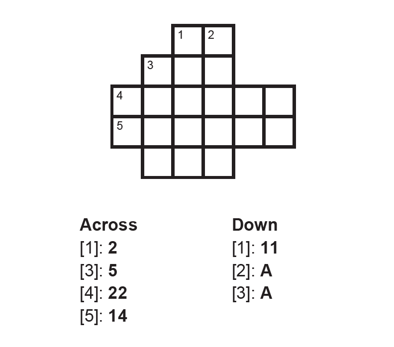
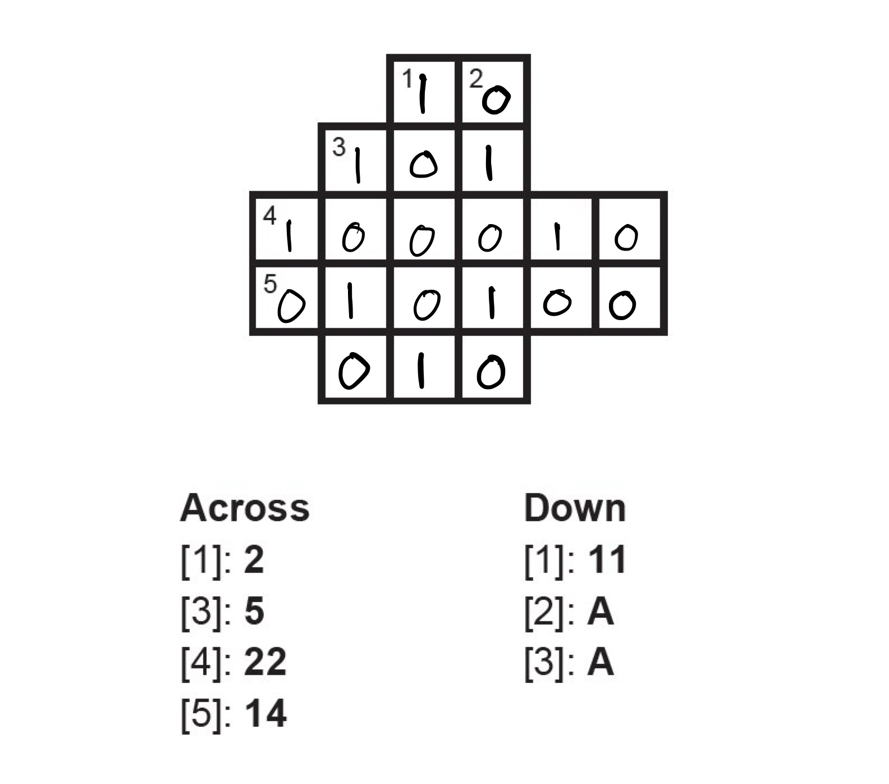
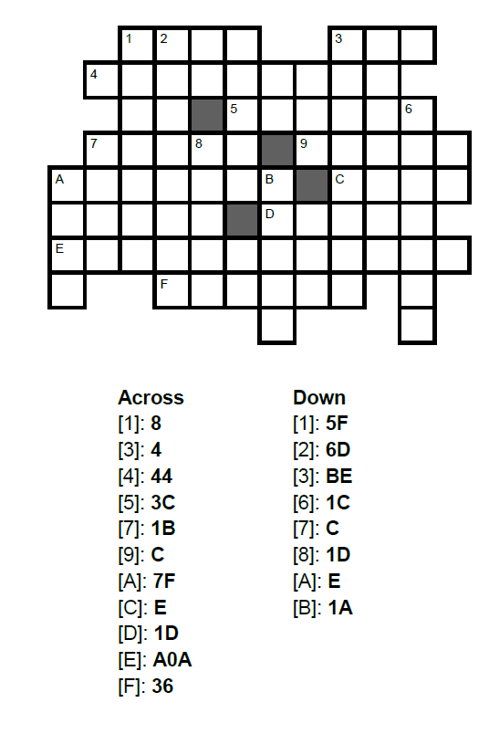

Øvelser
Øvelserne skal laves i løbet af undervisningen, men I må gerne kigge på dem derhjemme
Øvelse 1: Binær til Decimal¶
Konverter følgende binære tal til decimale tal.
-
\(110\) (1)
- \(6_{10}\)
-
\(1110111100_2\)(1)
- \(956_{10}\)
-
\(1001101110110_2\)(1)
- \(4982_{10}\)
Øvelse 2: Decimal til Binær¶
Angiv den binære udvidelse af følgende værdier og angiv derefter tallet i binær.
-
\(49_{10}\)
\(1\cdot2^5 + 1\cdot2^4 + 0\cdot2^3 + 0\cdot 2^2 + 0\cdot 2^1 + 1\cdot2^0\)
\(110001\)
-
\(212_{10}\)
\(1\cdot 2^7 + 1\cdot 2^6 + 1 \cdot 2^4 + 1 \cdot 2^2\)
\(11010100_2\)
Øvelse 3: Konverter til Decimal¶
Angiv den hexadecimale udvidelse af følgende værdier og angiv derefter tallet i decimal.
-
\(37D_{16}\)
\(3 \cdot 16^2 + 7 \cdot 16^1 + 13 \cdot 16^0\)
\(893_{10}\)
-
\(1A9_{16}\)
\(1 \cdot 16^2 + 10 \cdot 16^1 + 9 \cdot 16^0\)
\(425\)
Øvelse 4: Hex og Binær¶
Løs "crossbins" nedenfor. Hintsene er i hexadecimal, og svarene skal være i binær.
Bemærk: Hvis dit tal er for kort, tilføj nuller foran!




Øvelse 5: Hex og Binær¶
Lad \(S\) være mængden af alle binære tal med 7 tegn, og lad \(f\) være en funktion fra \(S\) til \(\mathbb{Z}\) givet ved \(f(x_2) = x_{10}\).
-
Bestem \(f(111010)\).(1)
- 58
-
Ordenen af en mængde er antallet af elementer i en mængde. For eksempel er ordenen af \({1, 5, 7, 19, 27, 39}\) lig med 6. Bestem ordenen af mængden \(S\). (1)
- 128
Øvelse 6: Binær Addition¶
Udfør følgende binære additionsoperationer. Vis dit arbejde ved at overføre som nødvendigt.
-
\(1011_2 + 1101_2\) (1)
- \(11000_2\) (hvilket svarer til \(24_{10}\))
-
\(10110101_2 + 1101110_2\) (1)
- \(100100011_2\) (hvilket svarer til \(291_{10}\))
Øvelse 7: Binær Multiplikation¶
Udfør følgende binære multiplikationsoperationer. Vis dit arbejde ved hjælp af standard multiplikationsalgoritmen.
-
\(101_2 \times 11_2\) (1)
- \(1111_2\) (hvilket svarer til \(15_{10}\))
-
\(1101_2 \times 110_2\) (1)
- \(1001110_2\) (hvilket svarer til \(78_{10}\))
-
\(10111_2 \times 1011_2\) (1)
- \(11111101_2\) (hvilket svarer til \(253_{10}\))
Øvelse 8: Oktal¶
I hver underopgave skal du udføre den første konvertering og betegne resultatet som x. Derefter skal du konvertere x yderligere til det ønskede talsystem.
-
\((1101011)_2 \longrightarrow x_8 \longrightarrow x_{10}\)
\((153)_8\) = \(107_{10}\)
-
\((782)_{10} \longrightarrow x_8 \longrightarrow x_2\)
\((1416)_8\) = \(1100001110_2\)
-
\(\left(5B7\right)_{16} \rightarrow x_2 \rightarrow x_8\)
\((10110110111)_2\) = \((2667)_8\)
Udfordringsøvelser¶
Udfordringsøvelse 1: Binære brøker¶
-
I et binært tal repræsenterer cifrene til venstre for decimalpunktet \((1,2,4,8, \ldots)-\left(2^0, 2^1, 2^2, 2^3, \ldots\right)\). Hvad tror du cifrene til højre for decimalpunktet repræsenterer? Beregn værdierne svarende til de første 4 cifre.
\(\frac{1}{2}-0.5 ; \quad \frac{1}{4}-0.25 ; \quad \frac{1}{8}-0.125 ; \quad \frac{1}{16}-0.0625\)
-
Konverter 0.75 til binær.
\(0.11_2\)
-
Konverter 14.6875 til binær.
\(1110.1011_2\)
Udfordringsøvelse 2: Base32¶
I nogle sammenhænge er det en fordel at bruge endnu flere end 16 symboler til at repræsentere tal - for eksempel tillader dette at generere kortere web-adresser. Et valg er base32, hvor den mest populære kodning (RFC 4648) er som vist i tabellen nedenfor (bemærk, at symbolerne "0" og "1" ikke bruges. Dette skyldes deres lighed med bogstaverne "O" og "I"):
| 0 | A | 8 | I | 16 | Q | 24 | Y |
|---|---|---|---|---|---|---|---|
| 1 | B | 9 | J | 17 | R | 25 | Z |
| 2 | C | 10 | K | 18 | S | 26 | 2 |
| 3 | D | 11 | L | 19 | T | 27 | 3 |
| 4 | E | 12 | M | 20 | U | 28 | 4 |
| 5 | F | 13 | N | 21 | V | 29 | 5 |
| 6 | G | 14 | O | 22 | W | 30 | 6 |
| 7 | H | 15 | P | 23 | X | 31 | 7 |
-
Konverter tallet \(L 5 T_{32}\) til decimal.
\(12211\)
-
Konverter tallet 93678 til base32.
\(C3PO_{32}\)
-
Konvertering mellem binær og hexadecimal er let, fordi hver ciffer i hexadecimal svarer til præcis fire cifre i binær. Er der en lignende symmetri mellem binær og base32?
Hver ciffer i base32 svarer til fem cifre i binær.
-
Konverter \(1001011011_2\) til base32.
\(S3_{32}\)
-
Konverter \(BATMAN_{32}\) til binær.
\(0000100000010011011000000001101_2\)
Udfordringsøvelse 3: Shannons Entropi¶
I informationsteori er Shannons entropi et mål for usikkerheden i et sæt af mulige udfald. Den er defineret som:
hvor \(H(X)\) er entropien af den tilfældige variabel \(X\), \(p(x_i)\) er sandsynligheden for udfald \(x_i\), og summen tages over alle mulige udfald. Bemærk, at på grund af base 2 i logaritmen vil svaret være i bits, men du kan også beregne det i andre enheder.
Du kan også tænke på det som et mål for den gennemsnitlige mængde information produceret af en stokastisk datakilde.
Bemærk: Når vi taler om flere kast eller andre hændelser i træk, antages det altid, at disse hændelser er uafhængige, medmindre andet er angivet.
-
Beregn entropien af et fair møntkast. (2 lige sandsynlige udfald, 50% chance for krone, 50% chance for plat)
1 bit
-
Beregn entropien af et biased 70:30 møntkast med en præcision på 4 decimaler. (2 udfald, 70% chance for krone, 30% chance for plat)
0.8813 bits
-
Beregn entropien af at rulle en fair sekssidet terning. (6 lige sandsynlige udfald, hver med ⅙ chance)
2.5850 bits
-
Beregn den samlede entropi af 100 biased 1:99 møntkast. (1% chance for krone, 99% chance for plat)
ca. 8 bits (8.0793)
Udfordringsøvelse 4: Entropi anvendelse¶
Almindelige nemme-at-implementere strategier for at lagre en serie af hændelsesresultater inkluderer at lagre et tal, der repræsenterer resultatet af hændelsen for hver hændelse, eller at lagre en liste af bits, der repræsenterer de mulige udfald med kun det endelige udfaldsbit sat til 1. Som du ved nu, er disse strategier måske ikke de mest effektive måder at lagre information på, især når udfaldene af hændelserne ikke er lige sandsynlige. I denne øvelse skal du prøve at tænke på kreative løsninger til at optimere sådanne problemer.
-
Hvis du havde 128 møntkast, og alle ville resultere i krone, undtagen præcis ét, der ville resultere i plat, hvad er den mindste mængde plads i bits, som du kunne lagre resultatet af alle kast i? (rækkefølge betyder noget)
7 bits
-
Hvad er nogle strategier, der bruger så lidt plads som muligt, når du lagrer udfaldene? Sigte efter at opnå det teoretiske minimum eller i det mindste så lidt som muligt.
For eksempel at lagre kun positionen af platten som et 7-bit tal (1-128). På denne måde kan vi rekonstruere alle 128 kastresultater ved for eksempel at gå fra 1 til 128 og tjekke, om positionen matcher det lagrede tal. Hvis ja, kan vi udskrive plat, ellers krone.
-
Gentag det samme for kun 100 møntkast, hvad er den mindste mængde plads i bits, som du kunne lagre resultatet af alle kast i? (rækkefølge betyder noget)
6.6439 bits
-
De fleste digitale systemer i det virkelige liv bruger binære tal til at lagre information. For hver ciffer er der 2 mulige tilstande. Kan informationen om de 100 kast nævnt tidligere lagres med perfekt effektivitet i binær? (Hint: tænk på antallet af udfald, din lagring kan repræsentere, og hvad det betyder at være effektiv i disse termer)
Nej. Vi kan kun bruge et naturligt antal bits, og enten kan vi repræsentere flere eller færre end 100 udfald. At være effektiv i dette tilfælde betyder at kunne repræsentere præcis 100 udfald uden spildt plads.
-
Hvilket talsystem kunne du bruge i stedet for at lagre informationen mere effektivt? (Hint: prøv at ændre base af logaritmen, når du beregner entropien, søg efter hele tal resultater)
Base 10 og base 100 opnår begge den samme perfekte effektivitet i dette tilfælde. Begge kan repræsentere 100 udfald med et helt antal cifre (ingen rest betyder ingen spildt plads). Bemærk, at blandede baser også kan bruges til at opnå denne effektivitet, og for at finde alle mulige baser skal du blot finde alle divisorer af 100. (undtagen unary, som ikke rigtig ville være egnet til dette)
Udfordringsøvelse 5: Entropi Avanceret¶
I den sidste øvelse var det garanteret at få præcis ét plat i serien af møntkast. Nu dropper vi den garanti og beregner i stedet entropien af en serie af 100 biased møntkast (99% chance for krone, 1% chance for plat).
-
Beregn entropien af en serie af 100 biased møntkast.
ca. 8 bits (8.0793)
-
Forestil dig, at vi ville fortsætte med at kaste mønten for evigt. Kan du bruge en lignende strategi til at lagre disse udfald sammenlignet med den tidligere øvelse? Ville det have den samme effektivitet?
Ja, så længe du tager højde for, at vi må fortsætte med at tilføje til denne lagring. Et eksempel på en strategi ville være at lagre tallene i 9-bit blokke, der repræsenterer, hvor mange krone der er kastet mellem platene. Hvis tallet er for stort, fylder vi blot blokken med 1'er og afslutter den i den næste blok på 9 bits.
Effektiviteten ville nærme sig at være den samme, husk at entropien handler om gennemsnit, og over tid ville vi nærme os det teoretiske minimum eller potentialet af vores strategi, men vi kan ikke garantere, at de næste par kast ikke bare er plat, hvilket hæmmer vores pladsbesparende strategier.
-
Prøv at lave et par af disse uretfærdige kast i en tilfældig talgenerator og prøv at bruge din strategi. Ville du spare plads sammenlignet med fx. at lagre hvert kast som én bit? (hvis ikke, prøv at fortsætte og se, om det forbedres)